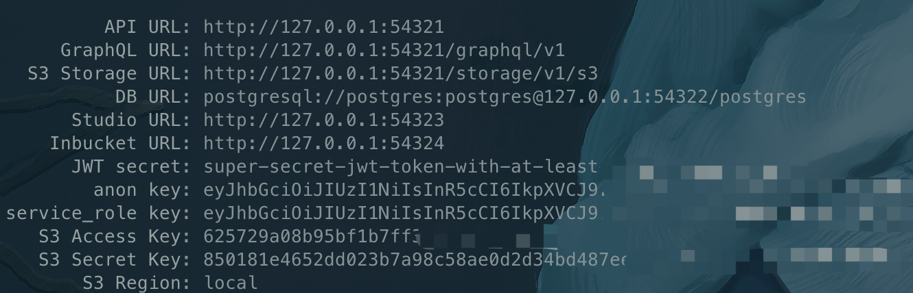

入门笔记1：Supabase 本地开发与 Vue.js 集成完整指南
2024-10-22T14:26:14+08:00 | 2分钟阅读 | 更新于 2024-10-22T14:26:14+08:00
一、相关概念
- BaaS（Backend as a Service）：后端即服务，提供如数据库、认证、文件存储等云端功能。Supabase 作为 BaaS 平台，默认集成了 PostgreSQL。
- PostgreSQL：一种开源对象关系型数据库，支持复杂数据类型和操作，是 Supabase 的核心数据库引擎。
二、Supabase 介绍
Supabase 是一个开源的 BaaS 平台，提供类似 Firebase 的功能集，但具备更高的灵活性和可定制性。它可以在私有云或本地部署，核心功能通常包括数据库支持（如 PostgreSQL）、实时 API、身份验证、文件存储、边缘函数以及一个用于管理项目的仪表板。
三、Supabase 的本地开发
要在本地设置 Supabase，你需要安装 Supabase CLI 和 Docker Desktop。
1. 安装 Supabase CLI
在 macOS 上，通过 Homebrew 安装：
brew install supabase/tap/supabase
2. 创建并启动本地 Supabase
为新的 Supabase 项目创建一个独立的文件夹：
mkdir my-new-supabase-project && cd my-new-supabase-project
supabase init
supabase start

启动成功后，访问 Studio URL 查看项目仪表盘。
3. 停止本地 Supabase
supabase stop
四、在 Supabase 仪表盘添加数据
-
进入仪表盘的 SQL 编辑器，粘贴以下 SQL 语句并运行：
-- 创建表 create table countries ( id bigint primary key generated always as identity, name text not null ); -- 插入示例数据 insert into countries (name) values ('Canada'), ('United States'), ('Mexico'); -- 启用行级安全 alter table countries enable row level security; -
添加 RLS 策略，允许匿名用户读取数据：
create policy "public can read countries" on public.countries for select to anon using (true);
五、在 Vue.js 中使用 Supabase
1. 创建 Vue 项目
使用 Vite 创建一个新的 Vue 项目：
npm create vite@latest
2. 安装 Supabase 客户端库
在 Vue 项目根目录安装 Supabase 客户端库：
npm install @supabase/supabase-js
3. 配置 Supabase 客户端
在 /src/lib 目录中创建 supabaseClient.js 文件，初始化 Supabase 客户端：
import { createClient } from '@supabase/supabase-js'
export const supabase = createClient('<your-api-url>', '<your-anon-key>')
你可以在
supabase start启动后的日志中找到 API URL 和 anon key。
4. 获取数据并显示在 Vue 应用中
修改 App.vue 文件，从 Supabase 数据库获取数据并显示：
<script setup>
import { ref, onMounted } from 'vue'
import { supabase } from './lib/supabaseClient'
const countries = ref([])
async function getCountries() {
const { data } = await supabase.from('countries').select()
countries.value = data
}
onMounted(() => {
getCountries()
})
</script>
<template>
<ul>
<li v-for="country in countries" :key="country.id">{{ country.name }}</li>
</ul>
</template>
通过上述步骤，你将能够在前端界面上看到从 Supabase 数据库获取的国家列表。